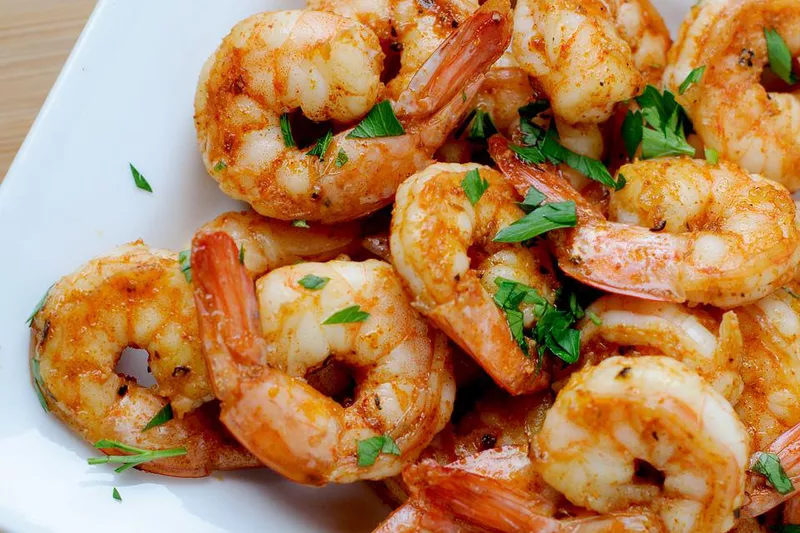

Odin Recipes
lasagna

lasagna, pasta dish of Italian origin, made with broad often ruffled noodles and a tomato or white sauce
Ingredients
- Noddle
- Tomato sauce
- white sauce
steps
- Heat the oven to 400ºF.
- Brown the beef and onion
- Prepare the baking dish and assemble the meat sauce.
- Begin layering the lasagna.
- Continue layering the lasagna.
- Bake the lasagna for 1 hour.
- Sprinkle with the remaining mozzarella and finish baking.
- Cool the lasagna for 15 minutes.